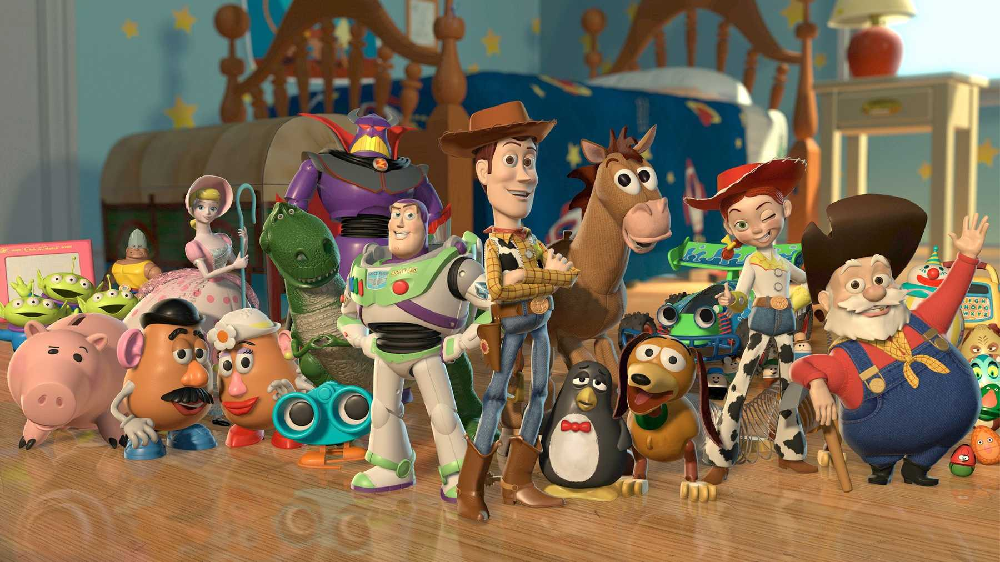

About Woody
Woody is the best friend you sometimes wish you never had, but end up being thankful for more often than not. Based on a character from a 1950s children's TV show, he's a vintage cowboy doll that proudly serves as the leader of the toys that belong to a boy named Andy. He's smart, stubborn, loyal, overbearing, brave, borderline narcissistic, and would do just about anything for his friends.
Woody and his friends
Woody's Characteristics
- He's Andy's favorite toy. (Shhh, don't tell the others.)
- Bo Peep is his boo thang.
- His favorite phrase is, "There's a snake in my boot!" Even though there's never a snake in his boot.
Woody's Friends
Woody has some amazing friends. His best friend (aside from Andy, of course) is probably Buzz. But like many friendships these days, this duo started with Woody feeling intimidated and jealous of Buzz's (obviously) superior modern appearance and high-tech features. It took about an hour and 21 minutes, but he got over it. Click on the links below to check out the roundup of all his friends.